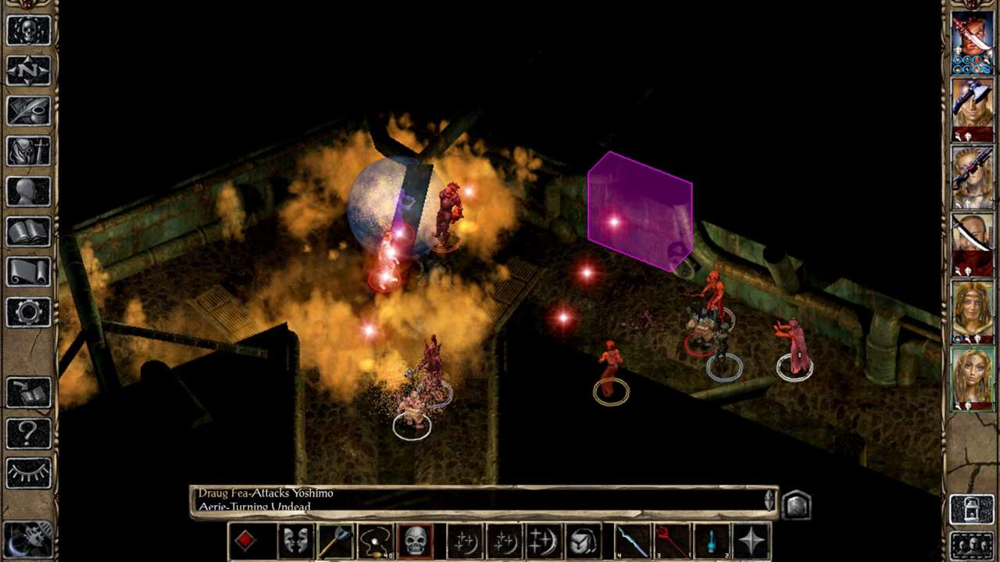
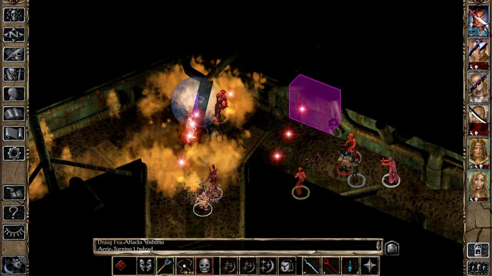

Baldur's Gate 2 Download For PC Full Enhanced Edition
Specifications
- Release date:November 15, 2013
- Genre: Role Playing
- Developer and Publisher:Bioware & Black Isle studio
- Platform:PC(Windows)
- Interface language:English, French, German, Italian, Russian, etc
- Voice language:English
- Multiplayer:Yes
- Version:v2.6.6.0
Description:
Baldur's Gate II: Shadows of Amn is a role-playing video game developed by BioWare and published by Interplay Entertainment. It is the sequel to 1998's Baldur's Gate and was released for Microsoft Windows in September 2000. Following its predecessor, the game takes place in the Forgotten Realms, a fantasy campaign setting, and is based on the Advanced Dungeons & Dragons 2nd edition rules. Powered by BioWare's Infinity Engine, Baldur's Gate II uses an isometric perspective and pausable real-time gameplay. The player controls a party of up to six characters, one of whom is the player-created protagonist; the others are certain characters recruited from the game world.
 
How to Download Baldurs Gate 2 Game?
If you want to Download the game "Baldurs Gate 2" latest version then you should see the following requirements and check that whether your PC meets the requirement to run this game smoothly or not.If it meets the requirement then follow the following steps to download this game.
Requirements
| Minimum | Recommended | |
|---|---|---|
| OS | Windows 7, 8.1, 10 64-bit | Window 10 64 Bit |
| CPU | Dual Core Processor | AMD Ryzen 3 or Intel Core i3 processor |
| RAM | 1 GB RAM | 4 GB RAM |
| GPU | OpenGL 2.0 compatible | AMD Radeon RX or NVIDIA GTX video card |
| VRAM | 2GB | 4GB |
| Storage | 4 GB available space | 4 GB available space |
Ways To Download this Game
- First Of all scroll down and click on the link given below.
- then you will be redirected to a new website then scroll down and click on the download button and the download will be start.
- finally extract the setup and enjoy your latest version game 'Baldurs Gate 2'.
To Download this game click on the link given below:
CLick Here
Related Games

Ghostrunner is a hardcore FPP slasher packed with lightning-fast action, set in a grim, cyberpunk megastructure...

Observer is a psychological horror video game played from a first-person perspective...

Cloudpunk is a cyberpunk adventure game developed by German developer Ion Lands and published by Maple Whispering Limited for Microsoft Windows...